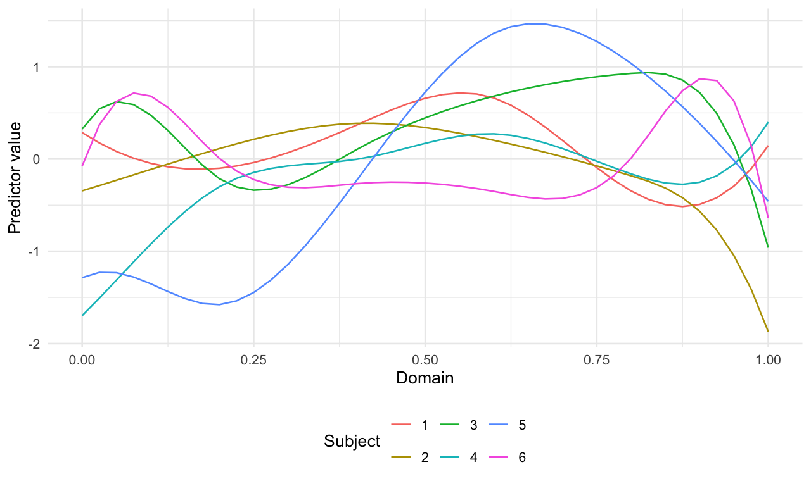
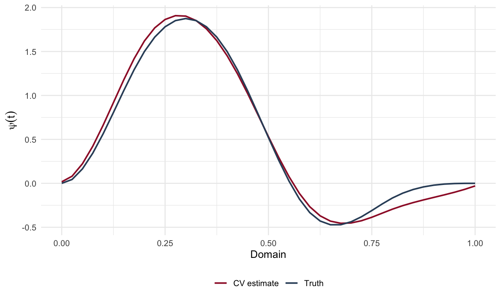
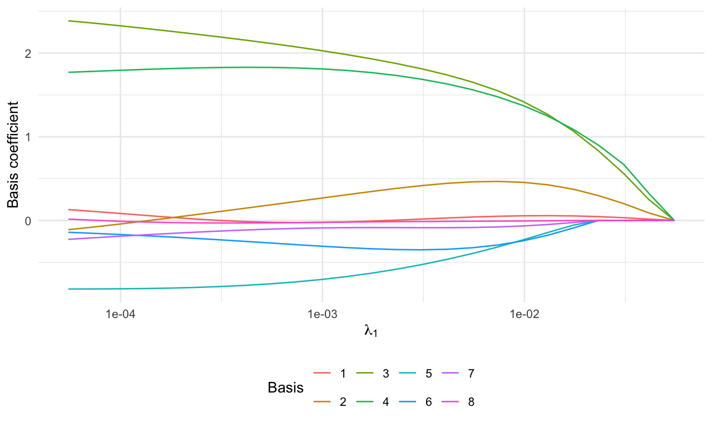
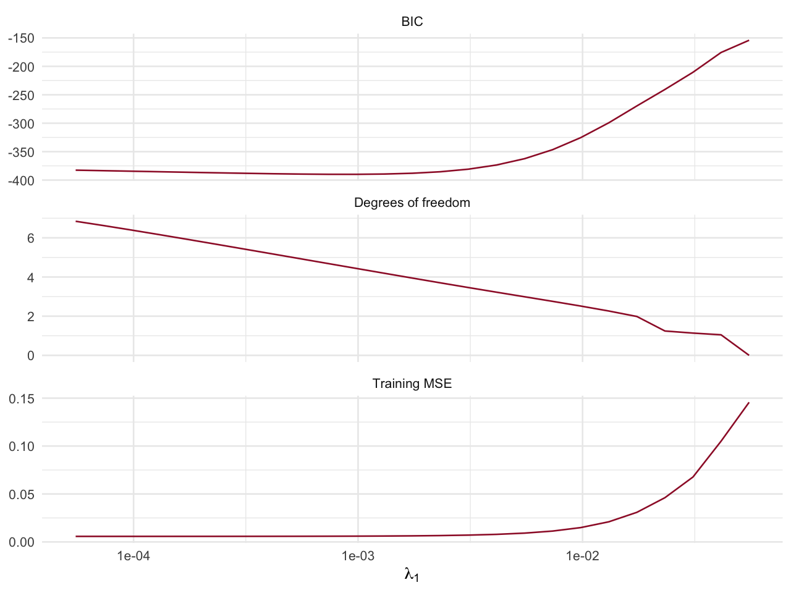

Scalar-on-function regression
1 From predictor curves to a coefficient curve
For subject \(i\), the model relates a scalar response to a predictor curve:
\[ y_i=\int_0^1 x_i(t)\psi(t)\,\mathrm dt+\varepsilon_i, \qquad \psi(t)=\boldsymbol\varphi(t)^\top\boldsymbol\psi. \]
f2sSP() represents the coefficient function with B-splines and imposes an overlapping-group penalty on the basis coefficients. Local support of the basis makes it possible to estimate regions where the coefficient function is zero. Here the curve has eight basis coefficients, of which three are nonzero.
Grid convention. The current implementation forms mX %*% H, where H contains basis values, without adding quadrature weights. We therefore multiply the sampled predictor curves by trapezoidal weights before fitting. The same weighted matrix is used for simulation and prediction. This makes the matrix product approximate the displayed integral rather than an unscaled sum.
set.seed(201)
n_fun <- 80
t <- seq(0,1,length.out=41)
H <- splines::bs(t,df=8,intercept=TRUE)
curve_scores <- matrix(rnorm(n_fun*8),n_fun,8)
X_curves <- curve_scores %*% t(H)
qweight <- c(.5,rep(1,length(t)-2),.5)*diff(t)[1]
X_quad <- sweep(X_curves,2,qweight,"*")
psi_true <- drop(H %*% c(0,0,2,2,-1,0,0,0))
y_fun <- drop(X_quad %*% psi_true) + rnorm(n_fun,sd=.08)curves <- data.frame(t=rep(t,6),x=as.vector(t(X_curves[1:6,])),
subject=factor(rep(1:6,each=length(t))))
ggplot(curves,aes(t,x,colour=subject)) + geom_line() +
labs(x="Domain",y="Predictor value",colour="Subject")
Six predictor curves before quadrature weighting.
2 Fit and select the curve
We use cubic B-splines (splOrd=4) on the package’s equally spaced grid on \([0,1]\). The input rows represent subjects, not time points. The package’s CV routine splits subjects; it does not split individual points from a curve.
scalar_fit <- f2sSP(vY=y_fun,mX=X_quad,M=8,splOrd=4,
nlambda1=25,lambda1.min.ratio=.001,
standardize.data=FALSE,control=control)
check_path(scalar_fit)
set.seed(202)
scalar_cv <- f2sSP_cv(vY=y_fun,mX=X_quad,M=8,splOrd=4,
lambda1=scalar_fit$lambda1,cv.fold=5,
standardize.data=FALSE,control=control)
i_scalar <- which.min(abs(scalar_fit$lambda1-scalar_cv$lambda1.min.mse))
psi_est <- drop(H %*% scalar_fit$sp.coef.path[i_scalar,])
stopifnot(max(abs(psi_est-scalar_fit$sp.fun.path[i_scalar,]))<1e-8)curve_comparison <- data.frame(t=rep(t,2),value=c(psi_true,psi_est),
curve=rep(c("Truth","CV estimate"),each=length(t)))
ggplot(curve_comparison,aes(t,value,colour=curve)) + geom_line(linewidth=.85) +
scale_colour_manual(values=c("CV estimate"="#9e1b32","Truth"="#334e68")) +
labs(x="Domain",y=expression(psi(t)),colour=NULL)
True coefficient curve and the estimate selected by subject-level cross-validation.
3 Follow the path and predict new responses
sp.coef.path stores basis coefficients, while sp.fun.path stores the corresponding function values. Examining both separates coefficient shrinkage from changes in the shape of the regression function.
ggplot(path_data(scalar_fit$sp.coef.path,scalar_fit$lambda1),
aes(lambda,coefficient,colour=term)) + geom_line() + scale_x_log10() +
labs(x=expression(lambda[1]),y="Basis coefficient",colour="Basis")
Basis-coefficient paths for the scalar-on-function model.
set.seed(203)
Xnew_curves <- matrix(rnorm(30*8),30,8) %*% t(H)
Xnew_quad <- sweep(Xnew_curves,2,qweight,"*")
ynew_fun <- drop(Xnew_quad %*% psi_true)+rnorm(30,sd=.08)
pred_fun <- drop(Xnew_quad %*% psi_est)
data.frame(test_MSE=mean((ynew_fun-pred_fun)^2),
curve_integrated_squared_error=sum(qweight*(psi_est-psi_true)^2))## test_MSE curve_integrated_squared_error
## 1 0.007965336 0.0068601054 Degrees of freedom, BIC and smoothing
lambda1.min.bic selects the BIC minimum; lambda1.min.mse selects the training-MSE minimum. Neither name denotes the CV optimum. The implementation computes BIC as \(n\log(\mathrm{MSE})+\log(n)\widehat{\mathrm{df}}\); plot both components to understand the trade-off. Selecting a tuning parameter on the same data introduces a further layer of model selection.
scalar_diagnostics <- data.frame(lambda=rep(scalar_fit$lambda1,3),
value=c(scalar_fit$mse,scalar_fit$bic,scalar_fit$dof),
measure=rep(c("Training MSE","BIC","Degrees of freedom"),each=length(scalar_fit$lambda1)))
ggplot(scalar_diagnostics,aes(lambda,value)) + geom_line(colour="#9e1b32") +
scale_x_log10() + facet_wrap(~measure,scales="free_y",ncol=1) +
labs(x=expression(lambda[1]),y=NULL)
Training error, BIC and the returned degrees-of-freedom estimate across the scalar-on-function path.
The optional lambda2 controls a finite-difference roughness penalty. With several smoothing values, output dimensions gain an additional grid axis. Always inspect dim() before selecting a slice.
smooth_fit <- f2sSP(vY=y_fun,mX=X_quad,M=8,lambda1=scalar_fit$lambda1,
lambda2=c(.001,.01),diff_order=2,
standardize.data=FALSE,control=control)
check_path(smooth_fit)
dim(smooth_fit$sp.coef.path)## [1] 25 2 8This example uses fixed weights. f2sSP() also offers weights_adaptive=TRUE; its CV companion has a different signature, so adaptive validation should be constructed explicitly with training-fold pilots.